2 tep用户手册帮你从unittest过渡到pytest¶
unittest和pytest是Python的2个强大的测试框架，经常用来做UI自动化或接口自动化。unittest是PyCharm的默认集成工具，也是我们大多数人入门自动化的首选框架。pytest提供了更丰富的功能，相对的上手难度也要高一点。如果学了pytest后，想快速用pytest写项目，用于工作实践，那么可以试试我写的这款测试工具：tep，try
easy pytest。
tep简介¶
在Google中输入python tep：
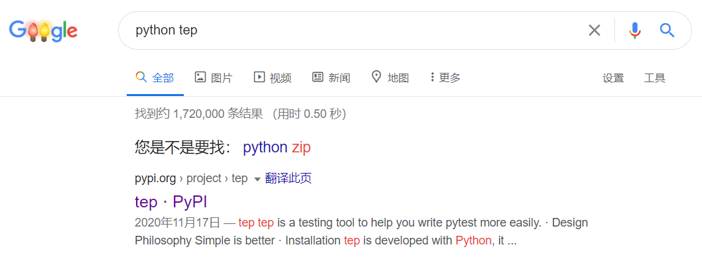
tep是一款测试工具，不是测试框架，它做的事情只是帮助你更轻松的使用pytest写项目代码，主要功能如下：
项目脚手架
pytest用例组织
输出HTML测试报告
基于fixture管理环境变量
基于fixture共享公共函数
访问MySQL数据库
集成常用第三方包
登录接口示例代码
工具安装¶
安装¶
tep已经上传到了PyPI（Python Package Index）：
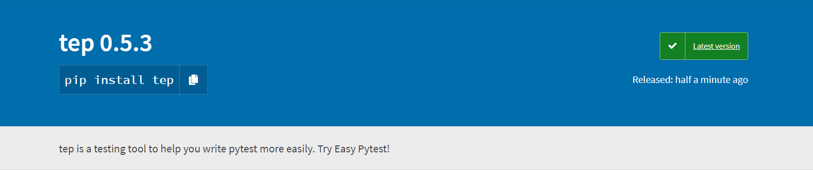
可以使用pip命令安装：
pip install tep
外网速度慢，pandas可能安装失败，推荐用国内镜像：
pip --default-timeout=6000 install -i https://pypi.tuna.tsinghua.edu.cn/simple tep
由于集成了第三方包，安装可能会花几分钟，请耐心等待。
Python版本
3.6+
快速创建项目¶
tep提供了脚手架，预置了项目结构和代码，打开cmd，使用startproject命令快速创建项目：
cd some_directory
tep startproject project_name
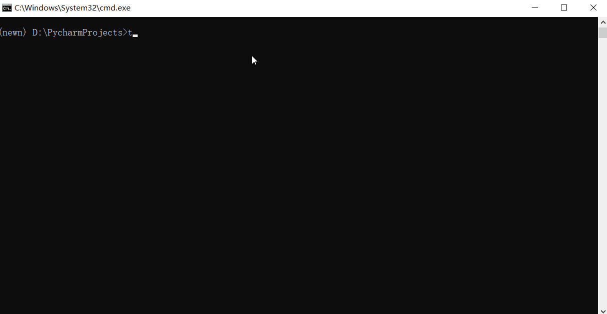
创建后的项目结果如下：
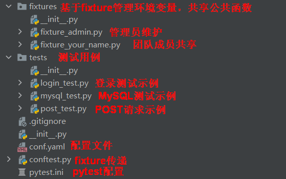
当前版本主要用来做接口自动化，建议把不同业务系统建成多个项目。
1个文件2处修改完成登录请求¶
tep已经预置了登录相关代码，只需要打开fixtures\fixture_admin.py，修改2个地方的代码，就可以完成登录请求。
修改环境变量¶
编辑fixtures/fixture_admin.py：
@pytest.fixture(scope="session")
def env_vars(config):
class Clazz:
def __init__(self):
env = config["env"]
self.mapping = {
"qa": {
"domain": "https://qa.com",
"mysql_engine": mysql_engine("127.0.0.1", # host
"2306", # port
"root", # username
"123456", # password
"test") # db_name
},
"release": {
"domain": "https://release.com",
"mysql_engine": mysql_engine("127.0.0.1",
"2306",
"root",
"123456",
"release")
}
# Add your env and variables
}
self.domain = self.mapping[env]["domain"]
self.mysql_engine = self.mapping[env]["mysql_engine"]
# Add properties
def add(self, env, key, value):
self.mapping[config["env"]][key] = value
return Clazz()
mapping是个字典，预置了2个环境：qa和release，每个环境预置了2个变量：domain和mysql_engine。
domain
url = domain +uri，例如https://qa.com/api/users/login/的domain是`https://qa.com，uri是/api/users/login/。
首先把qa环境的domain值改为你的测试域名。
修改登录代码¶
继续编辑fixtures/fixture_admin.py：
def _jwt_headers(token):
return {"Content-Type": "application/json", "authorization": f"Bearer {token}"}
@pytest.fixture(scope="session")
def login():
# Code your login
logger.info("Administrator login")
response = request(
"post",
url=url("/api/users/login/"),
headers={"Content-Type": "application/json"},
json={
"username": "admin",
"password": "123456",
}
)
assert response.status_code < 400
response_token = jmespath.search("token", response.json())
class Clazz:
token = response_token
jwt_headers = _jwt_headers(response_token)
return Clazz
在# Code your login处开始修改代码，替换API路径/api/users/login/和请求参数json。如果你的登录接口不会返回token，那么修改jmespath.search("token", response.json())为实际响应取值。
tep预置登录返回了2个值：
token和jwt_headers。
测试登录¶
打开tests/login_test.py：
from loguru import logger
def test_login(login):
logger.info(login.token)
执行后就会调用登录接口发起请求。
遇到问题无法解决请留言或加群。
编写测试用例¶
用例组织¶
测试用例全部放在tests目录下：
每个.py模块以test_前缀或_test后缀命名，每个test函数以test前缀命名。只要遵循这个规则，目录层次不影响。示例：
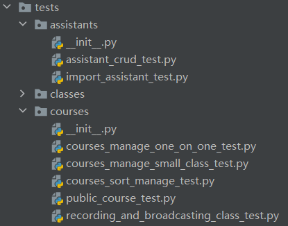
建议每个
.py模块只包含1个test函数，也就是1条测试用例。
接口请求设计¶
每条测试用例可以包含单个或多个接口请求。tep预置了1个POST请求示例代码，打开tests/post_test.py：
import jmespath
from loguru import logger
from tep.client import request
def test_post(faker_ch, url, login):
# description
logger.info("test post")
# data
fake = faker_ch
# request
response = request(
"post",
url=url("/api/users"),
headers=login.jwt_headers,
json={
"name": fake.name()
}
)
# assert
assert response.status_code < 400
# extract
user_id = jmespath.search("id", response.json())
每个请求由5部分组成，从上往下分别是描述、数据、请求、断言和提取。
借鉴了JMeter元件和参数化关联的设计思想。
描述
描述这个请求是干嘛的。
数据
初始化局部变量，例如使用faker库造测试数据。
请求
如果需要打印请求日志，可以from tep.client import request，tep.client.request对requests.request除了记录日志外，没有做任何修改。
如果请求报错了，那么很可能是代码写错了。
也可以直接使用原生request，from requests import request。
不同请求方法的代码如下：
request("get", url="", headers={}, json={})
request("post", url="", headers={}, params={})
request("put", url="", headers={}, json={})
request("delete", url="", headers={})
# 上传excel
request("post",
url="",
headers={},
files={
"file": (
file_name,
open(file_path, "rb"),
"application/vnd.openxmlformats-officedocument.spreadsheetml.sheet"
)
},
verify=False
)
更多用法参考
requests.request。
断言
断言使用Python标准断言assert 表达式，表达式跟if语句表达式一模一样。
提取
推荐使用jmespath提取JSON数据，也可以使用Python[]中括号提取。
HTML测试报告¶
批量执行用例¶
单个测试用例，在PyCharm中执行就可以了。多个测试用例批量执行，需要打开左下角的Terminal，输入命令来执行：
# 先进入tests目录
cd tests
# 批量执行
pytest
HTML测试报告¶
tep提供了--tep-reports参数来生成allure测试报告：
pytest --tep-reports
报告文件存放在根目录的reports/中：
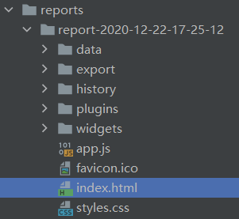
右键index.html选择：
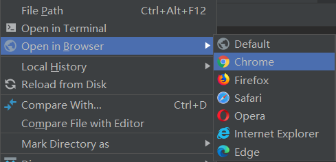
就会打开浏览器显示测试报告了：
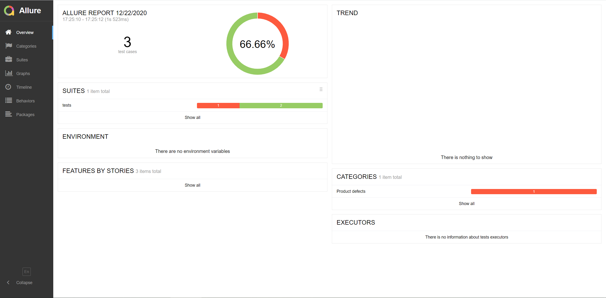
默认allure报告右上角的
TREND是无法显示数据的，--tep-reports修复了这个问题，根据history数据生成TREND走势图。
自定义环境变量¶
静态添加¶
编辑fixtures/fixture_admin.py，在mapping字典中# Add your env and variables处添加环境变量，在# Add properties处添加属性，参考domain和mysql_engine。示例：
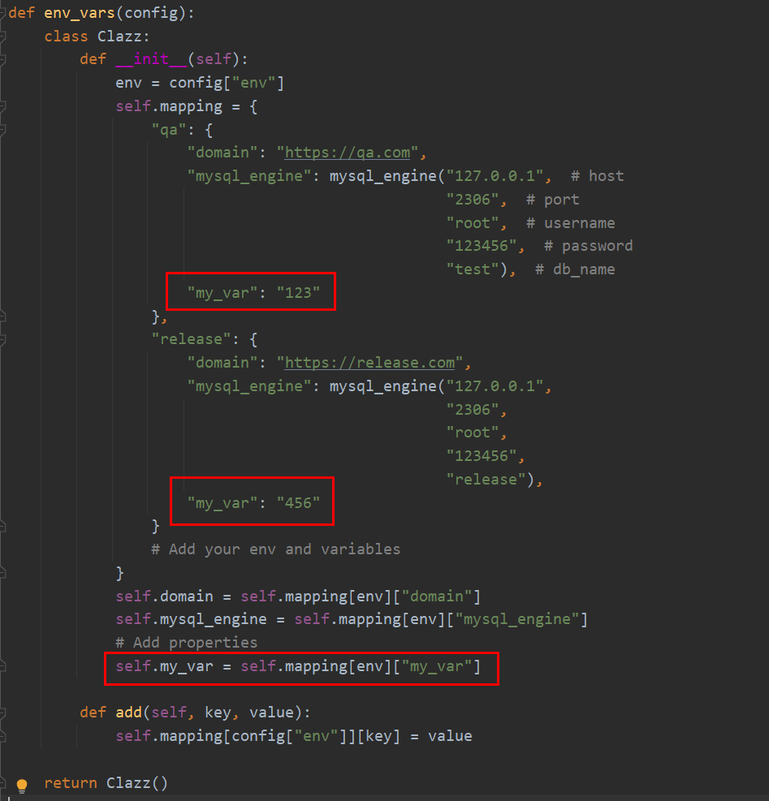
使用环境变量¶
env_vars返回了类对象实例，通过.运算符来使用环境变量：
env_vars.domain
env_vars.mysql_engine
env_vars.my_var
不需要import，而是给test函数添加参数，如
def test(env_vars):
团队共享公共函数¶
通过fixture技术，我们可以把重复代码提取出来，在团队间进行复用。tep重度使用了这个技术，在fixtures目录中，除了预置的fixture_admin.py，可以继续添加团队成员的fixture：
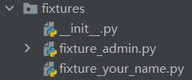
新添加的fixture_your_name.py需要到根目录的conftest.py中注册才能生效：
# Import fixtures
exec("from .fixtures.fixture_admin import *")
exec("from .fixtures.fixture_your_name import *")
conftest.py模块中建议全部定义成fixture，不对外提供function。
为了避免命名冲突和代码跟踪，团队成员的公共函数命名建议加上_yourname后缀。
访问MySQL数据库¶
首先在fixtures\fixture_admin.py中修改mysql_engine：
"mysql_engine": mysql_engine("127.0.0.1", # host
"2306", # port
"root", # username
"123456", # password
"test") # db_name
依次填写主机名、端口、用户名、密码、数据库名。
接着使用pandas来访问数据库，tests\mysql_test.py预置了示例代码：
from loguru import logger
def test_mysql(pd, env_vars):
logger.info(pd.read_sql("select 1 from dual", env_vars.mysql_engine))
返回的数据可以通过data["列名"]["行号"]的方式读取。
如果想在console中以表格方式显示表数据，可以使用tep.dao.print_db_table()函数，如：
from loguru import logger
from tep.dao import print_db_table
def test_mysql(pd, env_vars):
data = pd.read_sql("select 1 from dual", env_vars.mysql_engine)
logger.info(print_db_table(data))
第三方包集成说明¶
tep使用了Poetry来管理包和依赖：
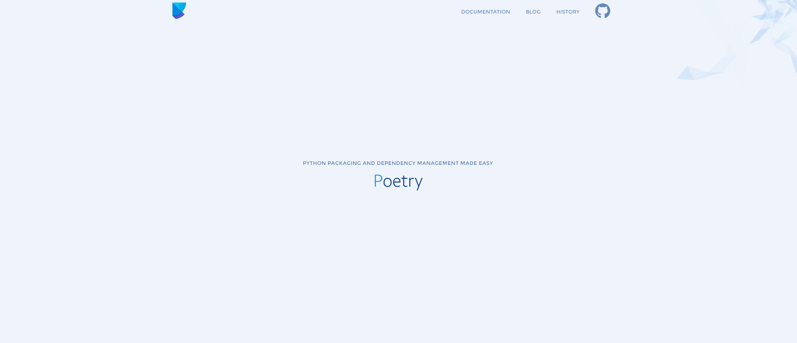
目前已集成：
# 造测试数据
faker = "^4.1.1"
# 提取JSON数据
jmespath = "^0.10.0"
# 屏蔽HTTPS警告
urllib3 = "^1.25.9"
# HTTP/HTTPS请求
requests = "^2.24.0"
# HTML测试报告
allure-pytest = "^2.8.16"
allure-python-commons = "^2.8.16"
# 打印日志
loguru = "^0.5.1"
# 访问数据库
pandas = "^1.1.0"
# 配置文件
pyyaml = "^5.3.1"
# 为pandas访问数据库提供engine
sqlalchemy = "^1.3.22"
# 把数据库表打印成表格
texttable = "^1.6.3"
# 支持sqlalchemy使用
pymysql = "^0.10.1"
小结¶
最早写这个工具的想法是以项目工程方式使用pytest，并结合第三方包完成接口自动化落地。如果你也有类似的想法，那么可以参考tep的做法。tep用户手册是针对于tep工具本身的使用说明，不包含pytest框架搭建和基本使用，如果想入门pytest并深度学习，可以阅读我写的pytest系列文章，共8篇。tep的最新版本是0.5.3，还不够稳定，也存在bug，我会坚持维护下去，既是实用工具，也是技术沉淀。对tep有任何建议或问题，欢迎公众号后台回复“加群”讨论哦：
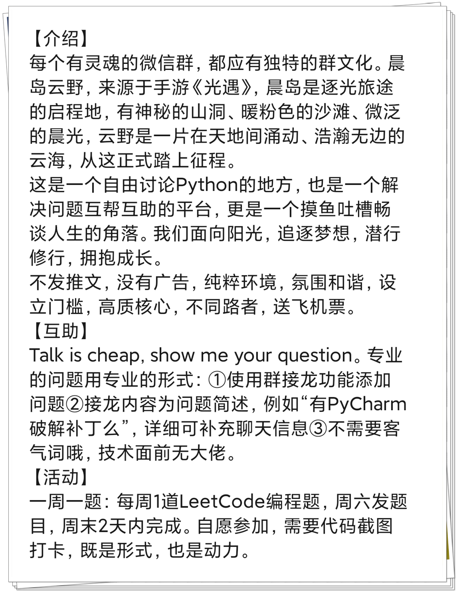
参考资料：